W tym miejscu będę chciał przedstawić jak krzeszowskie opactwo wyglądało na starych rycinach i rysunkach.
| 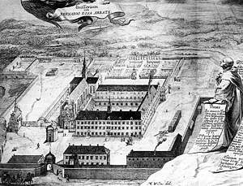 | Skan pochodzi z [lit. 7] i przedstawia widok opactwa krzeszowskiego. Jest to miedzioryt H. Tscherninga wg rysunku M. L. Willmanna z 1678 roku.
Taki sam rysunek znajduje się w [lit. 9] gdzie jest podpisany: Widok opactwa krzeszowskiego z około r. 1680; sztych J. Tscherninga wg rysunku M. Willmanna. Taki sam rysunek znajduje się w [lit. 10] gdzie jest podpisany: Krzeszów. Klasztor, sztych M. Willmanna z 1690 r. (repr. z: A. Rose, ...) Taki sam rysunek znajduje się w [lit. 20] gdzie jest on podpisany: Widok klasztoru wg miedziorytu H. Tscheringa na podstawie rysunku M. L. Willmanna z 1678 r. |
| 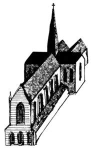 | Skan pochodzi z [lit. 20] i przedstawia rekonstrukcję gotyckiej bryły kościoła klasztornego. |
| 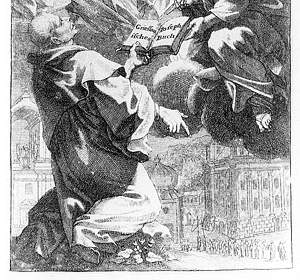 | Skan pochodzi z [lit. 7] i przedstawia widok kościoła św. Józefa (1692-1694) i kruchty zwieńczonej belwederem z figurami świętych, dobudowanej do fasady kościoła Łaski NMP w Krzeszowie w 1 fazie barokizacji - anonimowy grafik śląski (M. L. Willmann ?). |
| 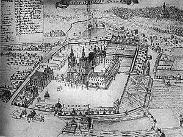 | Skan pochodzi z [lit. 10] i przedstawia: Krzeszów. Widok klasztoru, sztych z 1740 r. (repr. z Rose: Kloster Grüssau ...) |
| 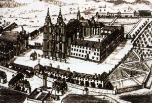 | Skan pochodzi z [lit. ?] i przedstawia: Widok opactwa w Krzeszowie, rys. F. B. Wernera, 1 poł. XVIII w., Biblioteka Uniwersytecka we Wrocławiu. |
| 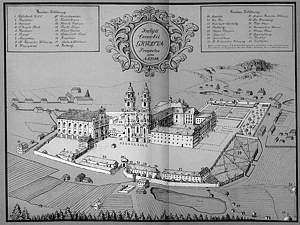 | Skan pochodzi z [lit. 3] i przedstawia: Widok opactwa krzeszowskiego, rysunek P. Kobela z 1931, wg rysunku F. B. Wernera z 1740 r. |
| 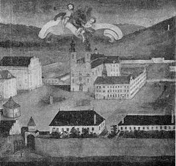 | Skan pochodzi z [lit. 9] i przedstawia widok opactwa krzeszowskiego z poł. XVIII w. Obraz olejny nieznanego autora ze zbiorów Gimnazjum w Kłodzku. |
| 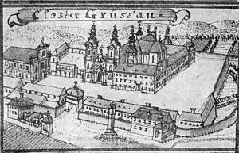 | Skan pochodzi z [lit. 9] i przedstawia widok opactwa krzeszowskiego wg rys. F. B. Wernera z poł. XVIII w.
Taki sam rysunek znajduje się w [lit. 4] gdzie jest podpisany jako: Widok opactva v Krzeszowie vg rys. F. B. Wernera z poł. XVIII w. (pisownia oryginalna, z "v" zamiast "w" :-) |
| 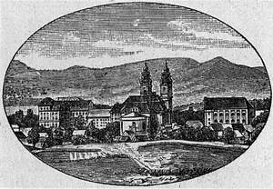 | Skan pochodzi z [lit. 10] i przedstawia: Krzeszów. Widok klasztoru, sztych M. Willmanna (repr. z: A. Milewski, Erklärung ...) |
 |
Skan pochodzi z [lit. 16] i przedstawia plan nowego krzeszowskiego klasztoru z 1773 roku.
Taki sam rysunek znajdziemy w [lit. 9] gdzie jest on podpisany: Prospekt projektowanego klasztoru w Krzeszowie wg rys. J. G. Fellera z ok. 1770 r. Taki sam rysunek znajduje się w [lit. 10] gdzie jest podpisany: Krzeszów. Projekt nowego klasztoru (repr. z: Rose, ...) Taki sam rysunek znajduje się w [lit. 20] gdzie jest podpisany: Projekt budowy barokowego kościoła i budynku klauzury z około 1770 r. autorstwa I. G. Fellera. |
| 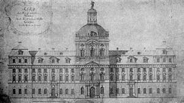 | Skan pochodzi z [lit. 9] i przedstawia zachodnią fasadę projektowanego klasztoru w Krzeszowie z ok. 1770 r. wg rys. J. G. Fellera. |
| 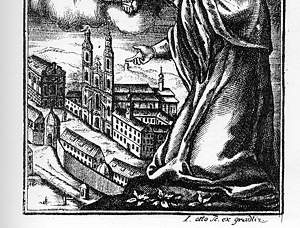 | Skan pochodzi z [lit. 7] i przedstawia widok opactwa krzeszowskiego w 1777 roku - L. Otto.
Taki sam rysunek znajduje się w [lit. 20] gdzie jest podpisany: Kościół klasztorny i klauzura wg ryciny L. Otto z 1777 r. |
| 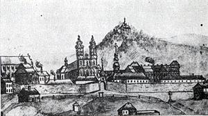 | Skan pochodzi z [lit. 30] i przedstawia widok zespołu krzeszowskiego od strony zachodniej. Rysunek nieznanego autora z 1793 roku. |
| 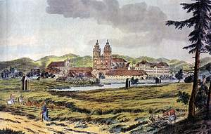 |
Skan pochodzi z [lit. 3] i przedstawia: Widok opactwa Krzeszowskiego, rysunek kolorowany F. A. Tittel, ok. 1830.
Taki sam rysunek (ale czarno-biały) znajdziemy w [lit. 1] gdzie jest podpisany jako: sztych Krzeszowa z ok. 1826 r. (wg F. A. Tittel). |
| 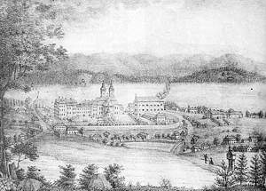 | Skan pochodzi z [lit. 7] i przedstawia widok opactwa krzeszowskiego od strony wschodniej - J. von Schlichten (około 1840).
Taki sam rysunek znajduje się w [lit. 10] i jest podpisany: Krzeszów. Widok ogólny, sztych I. v. Schlichtena (repr. z: Geschichte Notizen ... 1835) |
| 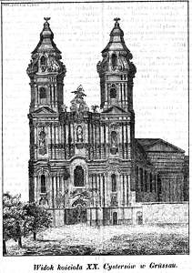 | Skan pochodzi z antykwariatu internetowego www.poliart.biz i jest zatytułowany "Widok kościoła XX. Cystersów w Grüssau". Jest to litografia pochodzący z: Przyjaciel Ludu 1842. |
 |
Ta kopia została znaleziona na Allegro: Krzeszów 1885 rok (numer aukcji 23294677) data zakończenia: (pon 12 kwi 2004 16:33:34 CEST). Fragment opisu z Allegro: "Oryginalny staloryt z 1885 roku. Staloryt wykonał Huber. Rysunek Th. Blatterbauer. Wydawca Flemming Głogów 1885 r. Oprawiony w grube (4 mm) passepartout, ukośnie wycięte. Mocno, czysto odbity, wyraźny ślad po płycie. Sygnowany na płycie: Gez. Th. Blatterbauer. Gest. v Huber Verlag Flemming in Glogau. Wymiary rysunku w mm: 155 x 105 Wymiary arkusza w mm: 230 x 160. Wymiary passepartout w cm: 30 x 25. Taki sam rysunek znajduje się w [lit. 7] gdzie opisany jest jako: Widok opactwa krzeszowskiego, staloryt wg rysunku Th. Blätterbauera z 2 poł. XIX w. Taki sam rysunek znajduje się w [lit. 9] gdzie opisany jest jako: Widok zespołu krzeszowskiego z kaplicą Kalwarii; staloryt TH. Blätterbauera z 2 poł. XIX w. Taki sam rysunek znajduje się w [lit. 10] gdzie opisany jest jako: Krzeszów. Widok klasztoru z Kalwarii, sztych F. v. Blätterbauera z 1850 r. (repr. z: A. Rose, ...) Staloryt ten można kupić (przynajmniej 17 sierpnia 2004 roku) w antykwariacie internetowym www.poliart.biz gdzie jest on opisany jako: Autor - Kaspar Ulrich Huber; Według - Theodor Blätterbauer; Pochodzenie - Z: Franz Schroller: Schlesien t.1. Glogau Carl Flemming [1885]. Ten sam rysunek (choć sporo zmodyfikowany) znajduje się w [lit. 20] gdzie jest podpisany: Widok kalwarii krzeszowskiej wg ryciny z XIX w. |
 |
Pochodzenie tego skanu nie jest mi znane (dostałem go na płycie CD-ROM).
Taki sam rysunek znajduje się w [lit. 10] i jest podpisany: Krzeszów. Widok ogólny w k. XVIII w. sztych F. G. Endlera. |
| 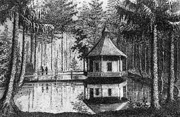 | Skan pochodzi z [lit. 9] i przedstawia Betlejem - pawilon na stawie wg rys. F. Endlera z XIX w. |
| 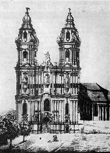 | Skan pochodzi z [lit. 9] i przedstawia fasadę kościoła klasztornego z widocznymi na kolumnach banderolami wg rys. nieznanego autora z XIX w.
Taki sam rysunek znajduje się w [lit. 20] gdzie jest podpisany: Fasada kościoła klasztornego wg rysunku z około 1825 r. |
| 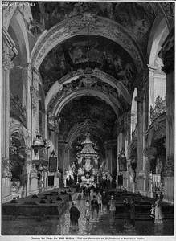 | Skan pochodzi z antykwariatu internetowego www.poliart.biz i jest zatytułowany "Inneres der Kirche der Abtei Grüssau. Nach einer Photographie von Fr.Pietschmann in Landeshut in Schlesien". Jest to drzeworyt sztorcowy pochodzący z: Über Land und Meer ... 1885-1886. |
| 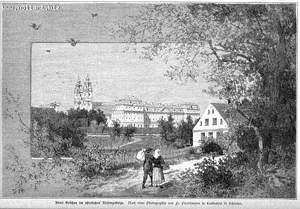 | Skan pochodzi z antykwariatu internetowego www.poliart.biz i jest zatytułowany "Abtei Grüssau im Schlesischen Riesengebirge. Nach einer Photographie von Fr.Pietschmann in Landeshut in Schlesien". Jest to drzeworyt sztorcowy pochodzący z: Über Land und Meer ... 1885-1886. |
| 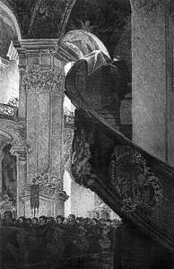 | Skan pochodzi z [lit. 1] i przedstawia ambonę z ok. 1926 roku (wg E. Fuchsa) |
| 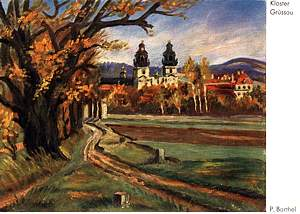 | Pochodzenie skanu nie jest mi znane. Przedstawia on "Kloster Grüssau" a autorem jest, jak można sądzić po podpisie, P. Barthel. |
| 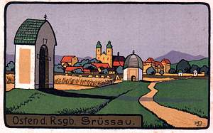 | Pochodzenie skanu nie jest mi znane. Przedstawia on "Osten d. Rsgb. Grüssau". |
| 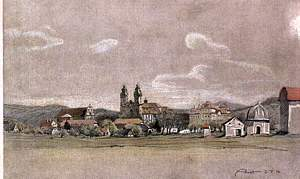 | Pochodzenie skanu nie jest mi znane. Przedstawia on w miarę współczesny widok Krzeszowa. W prawym dolnym rogu widać napis: "Aust. 3 V 16" (o ile dobrze odczytałem :-) |
| 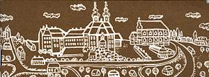 | Skan pochodzi z okładki [lit. 15] i jest to współczesna grafika autorstwa Tomasza Łowickiego. |
... i tyle :-)

{kind=link}
{kind=link}
{kind=link}
{kind=link}
{kind=link}
{kind=link}
{kind=link}
{kind=link}
{kind=link}
{kind=link}
{kind=link}
{kind=link}
{kind=link}
{kind=link}
{kind=link}
{kind=link}
{kind=link}
{kind=link}
{kind=link}
{kind=link}
{kind=link}
{kind=link}
{kind=link}
{kind=link}